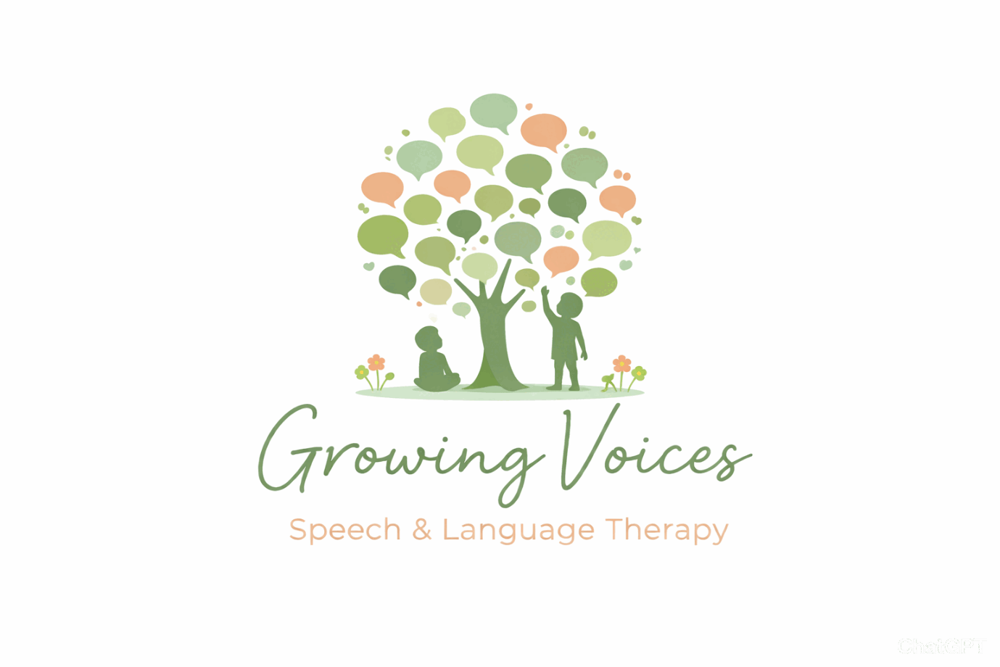

Growing Voices
Speech and Language Therapy
with Sandra
Helping communication blossom
Specialist Private Paediatric Speech and Language Therapy for children in Chelmsford, Essex
Helping children and young people communicate with confidence.
I am Sandra Grewal, a highly specialist Speech and Language Therapist with over 8 years of experience supporting children aged 2–18 with speech, language and communication needs. I have extensive NHS experience and currently work as a senior therapist at a specialist speech, language and communication school.
I provide private speech and language therapy for children and young people in Chelmsford and surrounding areas, offering play-based, family-centred support tailored to each child in their own home, nursery or school. My goal is to help children feel understood, confident and successful in their communication.
Worried about your child's speech or communication?
- • Worried about your child's speech?
- • Not sure if their communication is developing as expected?
- • Want some advice and support?
You're not alone — many families have these questions.
Children develop communication skills at different rates, and needing extra support is more common than people realise. Early speech and language therapy can reduce frustration, build confidence and support long-term learning. I work closely with families to create practical, positive therapy that fits into everyday life.
How I can help your child
I support children and young people with:
- ✔ Speech sound difficulties
- ✔ Language delays
- ✔ Autism communication support
- ✔ Selective mutism
- ✔ Social communication needs
Therapy is personalised, evidence-based and designed to feel engaging and supportive for both children and parents.
About Me
Sandra Grewal – Specialist Speech and Language Therapist
Hello — I'm Sandra, a highly specialist Speech and Language Therapist supporting children and young people aged 2–18 with speech and language difficulties. I hold a Master's in Speech and Language Therapy (Distinction).
I began my career in the NHS, working with children with all types of speech, language, and communication needs (SLCN) — from speech sound difficulties and stammering to developmental language disorder and complex social communication challenges. This experience gave me a deep understanding of how children develop communication skills, the challenges families face, and how to tailor therapy to support every child's individual potential.
I now work as a senior therapist in a specialist speech, language and communication school, supporting children with complex communication profiles.
As a mother of two, I understand the daily pressures of family life — balancing work, school, and supporting your child's development can feel overwhelming. I know how important it is for parents to feel supported, informed, and confident in helping their child reach their full potential. My aim is to make therapy practical, achievable, and positive, so families can see real progress without adding stress to their daily routine.
I offer home, school, and nursery visits, because children thrive in environments where they feel most comfortable. Providing therapy in familiar settings helps children engage more fully, making sessions more effective and meaningful.
My Approach
Every child communicates differently — therapy is never one-size-fits-all.
My approach is:
- Play-based and engaging
- Family-centred and collaborative
- Neuro-affirming and respectful
- Evidence-informed
- Tailored to real-life communication
I focus on building confidence, reducing frustration, and helping children feel understood. Sessions are designed to be positive and practical, with strategies parents and nurseries/schools can use so progress continues beyond therapy.
Working with Families
Parents are the most important partners in a child's communication journey. I work closely with families to understand each child's strengths, interests, and needs, creating therapy that fits into everyday life rather than adding pressure.
Whether your child needs speech therapy for speech sound difficulties or language therapy for developmental delays, my goal is to make the process clear, supportive, and empowering.
Services
What to Expect
At Growing Voices Speech and Language Therapy, I provide specialist assessment and therapy for children and young people aged 2–18. My focus is on helping children develop speech, language, and communication skills in a way that is play-based, family-centred, and achievable in everyday life.
Therapy can take place in your home, school, or nursery, because children thrive in environments where they feel most comfortable.
1. Complimentary telephone consultation
After contact is made there will be a Complimentary telephone consultation to discuss your initial concerns and how speech and language therapy may help. This is also an opportunity to talk through the available options and next steps, ensuring you feel informed and supported from the outset .
2. Initial Assessment
We will then schedule an initial assessment at your home tailored to your child's needs. These take about an hour and will involve gathering information from you, observing your child's speech and language during play and completing formal and informal assessments. I will provide you with a summary report and recommendations following the assessment.
3a. Therapy Sessions
Together we will decide whether therapy is appropriate and agree a set of targets for your child that will form the basis of therapy, taking into account their needs, readiness, and motivation. There is no requirement to commit to a set number of sessions, allowing flexibility based on your child’s progress and your family’s needs. I will recommend the number and frequency of sessions and keep you updated on progress, adjusting plans where needed. Sessions last 30–45 minutes and are designed to be fun and engaging to support learning.
3b. Review
If therapy is not appropriate at this time, or you feel comfortable following advice independently, a review session can be arranged after an agreed period to monitor progress, review targets, and provide updated advice where needed. This can be offered upon request or to provide a more up-to-date report.
4. Working with Others
If your child is known to an NHS Speech and Language Therapist or other professionals, including education staff, please let me know so we can work collaboratively. I will liaise with relevant professionals to support continuity of care. Any meetings or calls with other professionals will be agreed with you in advance and charged as outlined in the fee schedule.
Get in touch today to book a consultation and take the first step towards confident communication.
Book a ConsultationPricing
Pricing
|
Initial Assessment (Including summary report outlining areas of need) |
£140 |
|
Initial Assessment with Detailed report Includes case history and formal/informal assessment, based on need. Summary report is provided to explain assessment findings and recommendations, including areas of need. |
£200 |
|
Initial Assessment: Full Report Includes a thorough assessment and report containing detailed analysis of assessment scores and findings, response to therapy and recommendations as well as impact needs will have on child's access to education. The report will form contribution towards Education, Health and Care Plans (EHCP). |
£400 |
|
Follow-up Assessments (Reviews) Summary report if required |
£70 £50 |
|
School/Nursery observation/advice visit Additional written advice |
£70 £50 |
|
Therapy Session |
£70 |
|
Liaison meeting with other professionals (depending on location and duration) |
£30-£70 |
Travel fees (return journey)
I do not charge travel for sessions that take place within a 3-mile radius of where we are based (CM1 6YT). All sessions outside of this area will be charged at 0.45p per mile for a return journey from CM1 6YT
£0.45p per mile
FAQ
Frequently Asked Questions
How do I know if my child needs speech and language therapy?
If you're worried about your child's speech, language, or communication, it's always worth asking. Signs might include unclear speech, difficulty understanding language, limited vocabulary, frustration when communicating, or struggling to express themselves compared to peers.
Many children benefit from early support, and an initial consultation can help clarify whether therapy is needed and what next steps would be helpful.
What age children do you work with?
I work with children and young people aged 2–18 who are verbal or developing verbal communication.
What difficulties do you specialise in?
I specialise in:
- • Speech disorders and speech sound difficulties
- • Language disorders and developmental language delays
- • Developmental Language Disorder (DLD)
- • Selective mutism
- • Social communication difficulties
Where do therapy sessions take place?
I offer home visits, school visits, and nursery visits in Chelmsford and surrounding areas. Children often engage better in environments where they feel comfortable, which helps therapy feel natural and effective.
What happens at the first appointment?
The first appointment is usually a consultation and assessment. We talk through your concerns, your child's history, and your goals. I carry out a child-friendly assessment to understand strengths and needs. After this, I provide clear feedback and recommendations.
There is no pressure to commit to ongoing therapy — the aim is to give you clarity and guidance.
How long does therapy last?
This varies depending on your child's needs. Some children benefit from short-term targeted support, while others need longer-term therapy. We review progress regularly and adjust the plan together.
Do parents need to be involved?
Yes — parent involvement is a key part of successful therapy. I provide practical strategies you can use at home and guidance for schools or nurseries so your child gets consistent support.
Do you work with schools and nurseries?
Yes. I regularly liaise with teachers, SENCOs, and nursery staff to ensure strategies are carried over into everyday environments.
How quickly will I see progress?
Every child is different. Progress depends on the nature of the difficulty, how often therapy takes place, and how strategies are supported at home and school. My goal is always meaningful, functional progress — helping children communicate more confidently in real life.
Contact
How do I get started?
You can contact me to book an initial consultation. We'll discuss your concerns and decide together whether speech and language therapy is the right next step.